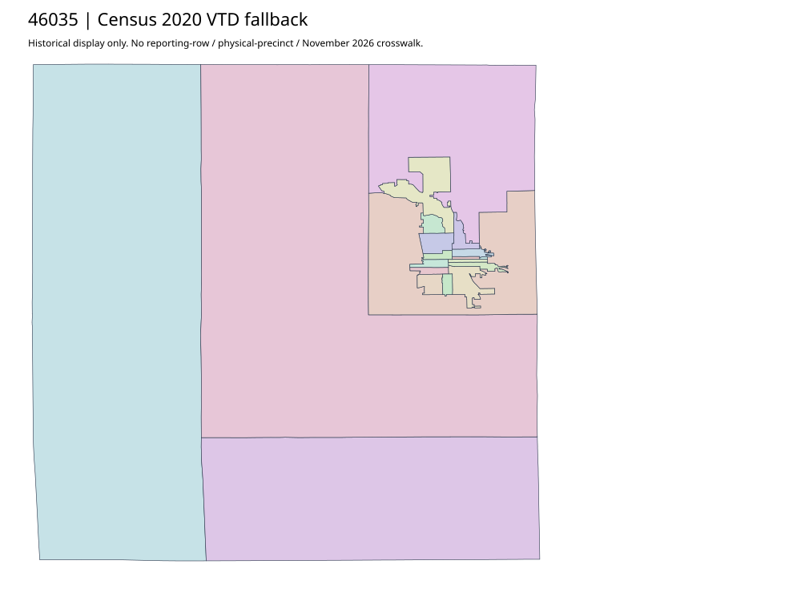

304 ordered indexDavison | 46035
Official auditor and property-information parents inspected. Separate actual official-domain PDF found by primary search is a complete Davison precinct/commissioner/ward map with source2010 redistricting,2014; current parent did not establish its current election effectiveness. Do not equate those mixed district boundaries to workbook observations.
6 priority / 8 full historical observations. Parent is a summary ancestor, not additive to leaves. No physical feature matches or current reporting crosswalk approved.
Acquired shared-parent assets
primary-46035-382cbc8ef4 | complete1-page PDF; all-page contact sheet; complete page1; complete original gzip. Exact reconstruction: python -B scripts/reconstruct.py --id primary-46035-382cbc8ef4 /private/tmp/map.pdf
Census2020 fallback
20 native historical VTD features. Entire785-feature ZIP original retained once, all66 counties. Yankton has one countywide VTD. No current/reporting allocation. complete original gzip

Full binary/attribute/geometry QA
Observed authority/acquisition routes
Complete SOS authority fields including original blank/masked values: parent inventory. No contacts were sent.
Ordered full children
- Precinct-03 (Precinct-04, Precinct-05) | 1603 source votes | priority
- Precinct-06 (Precinct-07, Precinct-08) | 1586 source votes | priority
- Precinct-15 (Precinct-16, Precinct-18) | 1453 source votes | priority
- Precinct-09 (Precinct-10, Precinct-11) | 1295 source votes | priority
- Precinct-19 (Precinct-20) | 1264 source votes | priority
- Precinct-12 (Precinct-13, Precinct-14) | 1206 source votes | priority
- Precinct-02 | 424 source votes | remainder
- Precinct-01 | 346 source votes | remainder